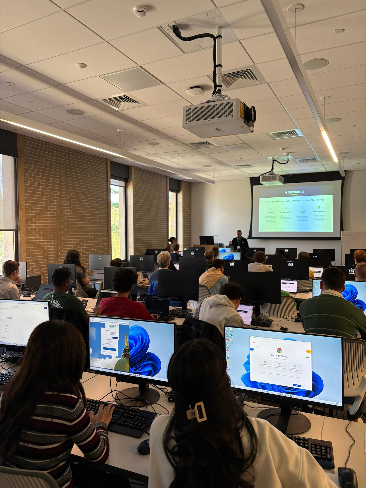
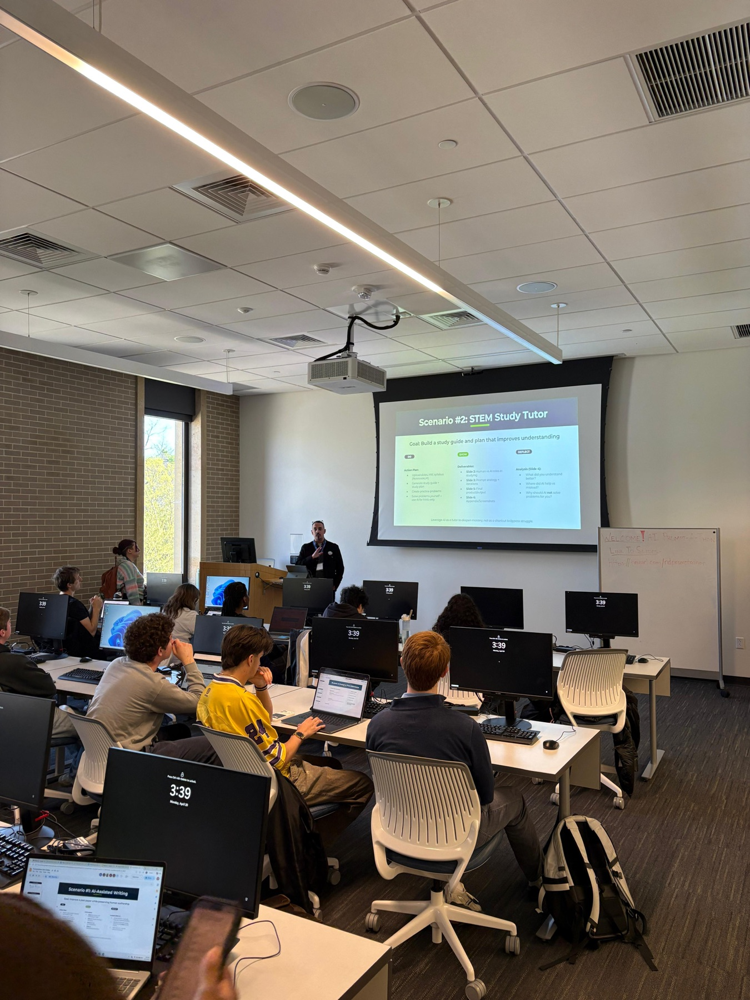
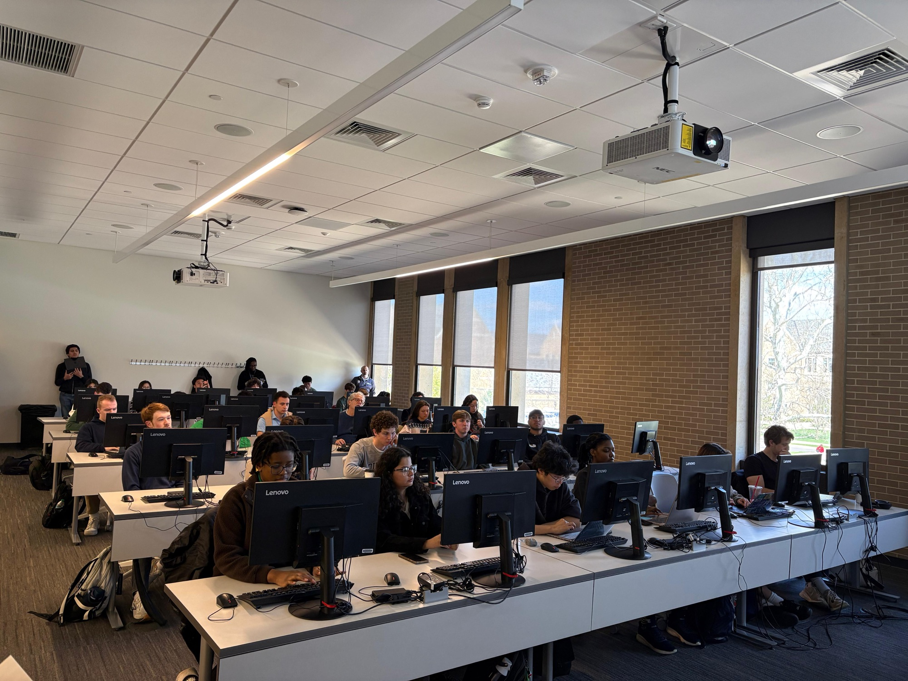
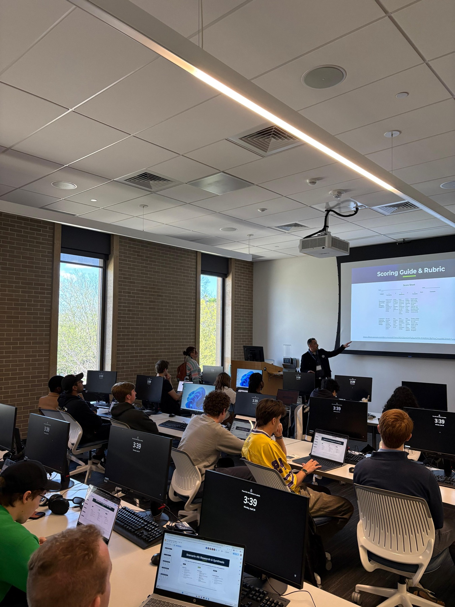
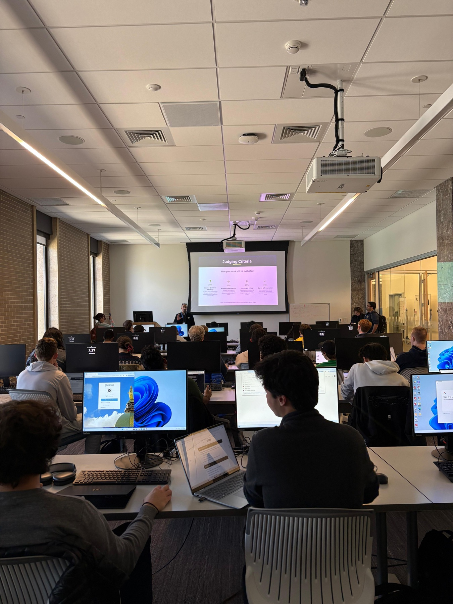
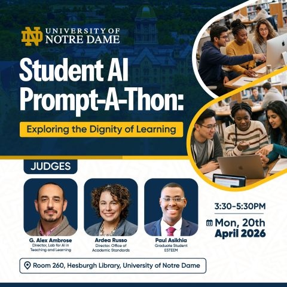

Student AI Prompt-A-Thon: Preserving the Dignity of Learning
Judging an AI hackathon at the University of Notre Dame, where students learned to use AI as a partner in learning, not a shortcut.
Hesburgh Library, University of Notre Dame · Monday, 20 April 2026.
Centri AI founder Paul Asikhia served as a judge at the Student AI Prompt-A-Thon at the University of Notre Dame. It was an afternoon that showed just how intentionally the next generation is starting to think about AI.
Held in Room 260 of the Hesburgh Library, the Prompt-A-Thon challenged students to solve real learning problems with AI, then show and explain their work. Paul judged alongside G. Alex Ambrose, Director of the Lab for AI in Teaching and Learning, and Ardea Russo, Director of the Office of Academic Standards.
Highlights
Around 80 students registered, with about 30 actively competing.
Every discipline in the room: from Computer Science and Engineering to Business, the Social Sciences and the Humanities.
Every level of experience, from first-time users to advanced builders.
Cash prizes for the top three students.


Four scenarios
Students chose one of four challenges: AI-assisted writing, a STEM study tutor, research and synthesis, or an open adventure of their own design. Each followed the same shape: do, show, reflect. Each was scored on human-centred learning, the quality of the human–AI partnership, learning and ethics, and the clarity of the presentation.
“AI can accelerate learning, but it should not replace the struggle, curiosity and critical thinking that actually build mastery.”
The dignity of learning
What stood out most wasn't the prompts themselves, but how students are beginning to treat AI: not just as a tool for answers, but as a partner in learning. That idea, the dignity of learning, ran through the whole event.



Why it matters beyond the classroom
It's the same principle we bring to every small business we work with. AI is at its best when it sharpens people's judgement instead of replacing it, and teaching a team to use it well is what turns a subscription into a real advantage.
Thank you to the organisers and fellow judges for the thoughtful conversations. We're excited to see how this generation continues to shape how we learn, build and solve problems with AI.

The event flyer.
Want to run an AI enablement session for your team?